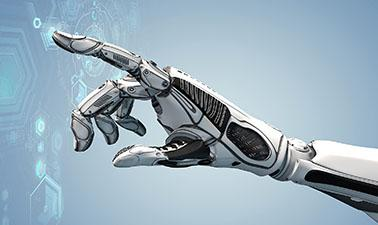

L'IA, ou Intellogence Artificielle, est un ensemble de théories et de techniques mises en œuvre en vue de réaliser des
machines capables de simuler l'intelligence humaine. Avec l'intelligence artificielle, l'homme côtoie un de ses rêves
prométhéens les plus ambitieux : fabriquer des machines dotées d'un « esprit » semblable au sien. Pour John MacCarthy,
l'un des créateurs de ce concept, « toute activité intellectuelle peut être décrite avec suffisamment de précision pour
être simulée par une machine ». Tel est le pari – au demeurant très controversé au sein même de la discipline – de ces
chercheurs à la croisée de l'informatique, de l'électronique et des sciences cognitives. Malgré les débats fondamentaux
qu'elle suscite, l'intelligence artificielle a produit nombre de réalisations spectaculaires, par exemple dans les
domaines de la reconnaissance des formes ou de la voix, de l'aide à la décision ou de la robotique.
Larousse.fr
La robotique, est l'ensemble des domaines scientifiques et industriels en rapport avec la conception et la réalisation de
robots. Au contraire du terme informatique, forgé de toutes pièces en France, robotique vient de l'anglais robotics,
imaginé par le romancier Isaac Asimov et popularisé par un livre publié en 1942, (Runaround) dans lequel il décrit les «
trois lois de la robotique ». Dans le domaine industriel, la robotique produit des automates réalisant des fonctions
précises sur des chaînes de montage. La robotique produit aussi des engins capables de se mouvoir dans différents milieux
: dangereux (pollués, radioactifs...), aérien, sous-marins, spatiaux... Outre l'industrie, la robotique concerne ainsi
aujourd'hui la recherche scientifique, l'exploration spatiale et les activités de défense militaire ou de maintien de
l'ordre. Elle intéresse également le secteur médical, pour les prothèses, les assistances aux chirurgiens ou aux
infirmiers. La robotique s'est également étendue récemment au marché grand-public avec des engins autonomes pour assurer
seuls certaines fonctions (aspirateurs, tondeuses à gazon...) ou pour des activités ludiques (robots compagnons, robots
jouets...). décision ou de la robotique.
Futura-sciences.com
ARTICLES RECENTS :
Et si l’avenir de l’intelligence artificielle se trouvait dans le cerveau des insectes ?
La DARPA a récemment sollicité le public dans le cadre d’un appel à idées. Il est question de trouver un moyen de mettre
au point des systèmes informatiques miniatures adaptés à l’intelligence artificielle. Comment se déroulera ce programme
original ?
Et si l’avenir de l’intelligence artificielle se trouvait dans le cerveau des insectes ?
Un curieux appel à idées Améliorer les systèmes humains grâce à des solutions inspirées de la Nature, telle est la
volonté de chercheurs américains. Un appel à idées a en effet été lancé le 4 janvier 2019 par la Defense Advanced
Research Projects Agency (DARPA), autrement dit l’agence chargée de la recherche et du développement des nouvelles
technologies destinées à un usage militaire. Elle dépend notamment du département de la Défense des États-Unis.
Cet appel a été formulé dans le cadre du programme baptisé Microscale Bio-mimetic Robust Artificial Intelligence
Networks (μBRAIN), dont le but est de mettre au point de futurs équipements miniaturisés capables d’exécuter des
tâches dictées par une intelligence artificielle, et cela tout en parvenant à réduire le temps d’entraînement. Il
est aussi question de limiter la consommation d’énergie et d’améliorer les capacités de calcul. La DARPA a un
prérequis concernant les propositions d’idées qui lui seront soumises : les candidats doivent s’inspirer des
petits insectes volants. Ces idées devront fournir une aide précieuse aux chercheurs afin de déterminer – si cela
est réellement possible – comment l’analyse du cerveau des insectes pourrait permettre de construire des systèmes
d’IA plus rapides et moins gourmands en énergie. Share Crédits : Wikimedia Commons Les petits insectes volants,
une stratégie clé pour l’IA ? Dans son appel, la DARPA fait l’éloge des petits insectes volants en ce qui concerne
« leur simplicité, leur efficacité et leur fonctionnalité complexe », dont l’étude pourrait « révéler des
innovations fondamentales en architecture et en calcul analogues ». Ainsi, le but est de déterminer si ces
insectes représentent vraiment des clés de stratégies pour améliorer les IA, de par leurs contraintes naturelles
de taille, de poids et de consommation d’énergie. L’agence a également indiqué que le programme se fera en deux
parties bien distinctes. La première se déroulera sur six mois, et consistera à cartographier les canaux d’entrée
et de sortie du système central d’intelligence d’un insecte. Le but ? Définir avec précision les interactions
physiques impliquées dans la signalisation. La deuxième phase – d’une durée d’un an – mettra en pratique ces
connaissances afin d’élaborer de nouveaux matériels informatiques dédiés à l’intelligence artificielle.
https://sciencepost.fr/2019/01/et-si-lavenir-de-lintelligence-artificielle-se-trouvait-dans-le-cerveau-des-insectes/
Intelligence artificielle et santé
L’intelligence artificielle (IA) est un domaine de recherche en pleine expansion et promis à un grand avenir. Ses
applications, qui concernent toutes les activités humaines, permettent notamment d’améliorer la qualité des soins. L’IA
est en effet au cœur de la médecine du futur, avec les opérations assistées, le suivi des patients à distance, les
prothèses intelligentes, les traitements personnalisés grâce au recoupement d’un nombre croissant de données (big data),
etc. Les chercheurs développent pour cela des approches et techniques multiples, du traitement des langues et de la
construction d’ontologies, à la fouille de données et à l’apprentissage automatique. Il est toutefois indispensable que le
grand public comprenne comment fonctionnent ces systèmes pour savoir ce qu’ils font et surtout ce qu’ils ne font pas. Le
robot omniscient, qui pour beaucoup symbolise l’IA, n’est pas pour demain !
Intelligence artificielle et santé
Comprendre l’IA L’intelligence artificielle est née dans les années 1950 avec l’objectif de faire produire des
tâches humaines par des machines mimant l’activité du cerveau. Face aux déboires des premières heures, deux
courants se sont constitués. Les tenants de l’intelligence artificielle dite forte visent à concevoir une
machine capable de raisonner comme l’humain, avec le risque supposé de générer une machine supérieure à
l’homme et dotée d’une conscience propre. Cette voie de recherche est toujours explorée aujourd’hui, même si
de nombreux chercheurs en IA estiment qu’atteindre un tel objectif est impossible. D’un autre côté, les
tenants de l’intelligence artificielle dite faible mettent en œuvre toutes les technologies disponibles pour
concevoir des machines capables d’aider les humains dans leurs tâches. Ce champ de recherche mobilise de
nombreuses disciplines, de l’informatique aux sciences cognitives en passant par les mathématiques, sans
oublier les connaissances spécialisées des domaines auxquels on souhaite l’appliquer. Cette approche - dont il
sera question tout au long de ce dossier - génère tous les systèmes spécialisés et performants qui peuplent
aujourd’hui notre environnement : créer des profils d'amis possibles sur les réseaux sociaux, identifier des
dates dans les textes pour classer des dépêches d’agence, aider le médecin à prendre des décisions, etc. Ces
systèmes, de complexité très variable, ont en commun d’être limités dans leurs capacités d’adaptation : ils
doivent être manuellement adaptés pour accomplir d’autres tâches que celles pour lesquelles ils ont été
initialement conçus.
https://www.inserm.fr/information-en-sante/dossiers-information/intelligence-artificielle-et-sante
Un combat de robots géants entre les États-Unis et le Japon
Les monstres de plusieurs tonnes de sont affrontés avec des fusils, des pinces et des tronçonneuses dans un duel très
calibré.
Un combat de robots géants entre les États-Unis et le Japon
TECHNO - C'est un grand jour pour tous les fans de mechas, les célèbres robots géants issus de la culture
japonaise, popularisés par Gundam, Evangelion ou Goldorak. Ce mercredi 18 octobre, on a pu voir deux exemplaires
bien réels de ces monstres de métal s'affronter. Le premier de ces deux robots géants, Eagle Prime, est Américain.
Conçu par la start-up MegaBots, il pèse 12 tonnes et mesure près de 5 mètres de haut. Il était opposé à Kurata, un
mecha fabriqué par la société japonaise Suidobashi de 6,5 tonnes pour 4 mètres de haut. Et c'est le plus gros qui
a gagné. Le combat, filmé plus tôt sans public, a été diffusé sur le site de streaming Twitch, puis sur Youtube.
Découvrez dans notre vidéo en haut de l'article un résumé de ses moments les plus marquants.
ARTICLES POPULAIRES :
L’IA de demain
Aujourd’hui et dans les années à venir, les programmes intelligents vont se développer fortement. Le progrès est en marche
(forcée, pourrait-on dire, sous l’égide des géants américains et chinois du digital) et c’est bien connu : l’on n’arrête
pas le progrès.
L’IA de demain
Par conséquent, aussi étonnant que cela puisse paraître, la période de boom technologique de l’algorithmique
intelligente actuelle n’en est en réalité qu’à ses balbutiements. Les théoriciens de la singularité technologique
se plaisent d’ailleurs à émettre l’hypothèse selon laquelle l’explosion de l’intelligence artificielle entraînera
un emballement des avancées technologiques, l’effet boule de neige en somme. L’excellent film de Wally Pfister
Transendance en 2014 témoignait de ce phénomène d’une certaine façon : l’intelligence appelle l’intelligence, et
vice versa. Et par voie de conséquence, les progrès technologiques afférents. Pour autant, le réalisateur
américain soulevait aussi une autre question relative au principe de singularité : le bouleversement de la société
humaine qui s’ensuivrait serait imprévisible, le bien de l’humanité étant contraire au … bien de l’humanité !
C’est une hypothèse que l’on retrouve également à hollywood dans le film I-Robot où les 3 lois de la robotique
(émises par le romancier Isaac Asimov dès 1942) y sont présentées comme un parfait garde-fou.
https://www.inprincipio.xyz/ia-demain/

La robotique, un secteur qui a de l'avenir
Alors qu’ils relevaient encore de la science-fiction il y a quelques décennies à peine, les robots font aujourd’hui partie
de notre réalité. Dans les usines, dans nos maisons ou à l’hôpital, ils sont de plus en plus présents et de plus en plus
performants. Et pour cause, depuis une quinzaine d’années, la robotique ne cesse de progresser au gré de la recherche
scientifique et d’innovations technologiques toujours plus pointues. Dans quels domaines la robotique est-elle surtout
utilisée de nos jours ? Et quel avenir semble se dessiner pour ce secteur ?
La robotique, un secteur qui a de l'avenir
UN SECTEUR D’EXPERTISE, DE MULTIPLES DOMAINES D’APPLICATION À ce jour, les robots sont surtout utilisés dans
l’industrie où, programmés pour accomplir des tâches pénibles et répétitives, ils assurent la fabrication de
nombreux produits. Cependant, la robotique a su s’étendre à d’autres domaines, notamment à la médecine avec le
développement de robots de chirurgie, des outils particulièrement utiles pour les opérations délicates. La
robotique domestique est aussi en plein essor, proposant aux consommateurs des robots de nettoyage et d’entretien
: tondeuses, aspirateurs, robots de piscines etc. Les métiers de la robotique sont ainsi des métiers d’expertise,
qui requièrent des connaissances théoriques ou techniques très spécifiques, ainsi qu’une grande capacité
d’adaptation de ces connaissances à un domaine précis (médecine, science, industrie). D’une part, les ingénieurs,
les roboticiens, les techniciens R&D (recherche et développement expérimental) et les programmeurs conçoivent les
robots. Et d’autre part, les mécaniciens, les opérateurs de fabrication et autres agents de production se chargent
de leur utilisation pratique. À cette grande variété de professions s’ajoutent aussi les métiers de la
communication et du marketing, pour lesquels il est également nécessaire d’avoir des connaissances en robotique.
LE FUTUR DE LA ROBOTIQUE : TOUJOURS PLUS DE PROGRÈS Les innovations technologiques de ces dernières années ouvrent
de nouvelles perspectives dans le développement de la robotique. Les nanotechnologies ont ainsi permis l’émergence
de la microrobotique qui, dans le futur, devrait être très utile à la médecine, notamment pour la fabrication
d’organes artificiels et de prothèses connectées. De même, les progrès en matière d’intelligence artificielle
laissent à penser que les robots pourraient bientôt se charger de travaux de plus en plus complexes. De plus, les
robots sont devenus des outils indispensables pour la recherche scientifique, permettant d’atteindre des zones
jusqu’ici inaccessibles. L’exploration spatiale et la découverte des fonds marins, par exemple, dépendent ainsi
beaucoup des robots et de leur évolution. La robotique a donc encore de beaux jours devant elle.
https://www.nrj.fr/active/tendances/la-robotique-un-secteur-qui-a-de-l-avenir-71268443
TOUS LES ARTICLES :
Aux origines de l'Intelligence Artificielle
L’intelligence artificielle se définit comme le contraire de la bêtise naturelle", selon Woody Allen. La recherche dans ce
domaine s’amplifie, une course mondiale à l’innovation est lancée depuis les années 2000. Mais d'où vient l’intelligence
artificielle et que recoupe ce terme ?
Aux origines de l'Intelligence Artificielle
Emmanuel Macron ne veut pas que la France "rate le train de l’intelligence artificielle", conduit par la Chine et
les Etats-Unis. Le président de la République a présenté ce jeudi 29 mars un plan ambitieux pour développer les
recherches dans ce domaine, en passe de révolutionner l’économie et la société. Mais le train de l’intelligence
artificielle compte de nombreux wagons. Retour aux origines de l’expression, et éclairage sur les domaines qu’elle
regroupe, alors que France Culture vous propose un forum à ce sujet ce samedi. Une idée née au milieu du XXe
siècle "L’apparition des ordinateurs, dans les années 1940-1950, semble rendre possible le rêve de l’intelligence
artificielle", écrit Frédéric Fürst, maître de conférence, du laboratoire MIS, Modélisation, Information et
Système de l’université de Picardie. A l’origine, le mathématicien Norbert Wiener lance la cybernétique dans les
années 1940, qu’il définit comme la science du fonctionnement de l’esprit humain. Il veut, selon Frédéric Fürst,
"modéliser l’esprit comme une boîte noire, mais cela n’aboutit pas". Les chercheurs se détournent alors de
l’esprit pour se concentrer sur les neurones. Et c’est là que démarre un bouillonnement d’idées. Un ordinateur en
1959, sa puissance équivaut à une calculatrice aujourd'hui. Un ordinateur en 1959, sa puissance équivaut à une
calculatrice aujourd'hui.• Crédits : Howard Sochurek - Getty Deux approches de l’IA, l'intelligence artificielle,
émergent dans les années 1940 : le connexionnisme et le cognitivisme. Le connexionnisme est porté par deux
neurologues, Warren McCulloch et Walter Pitts, qui proposent de reproduire dans une machine le fonctionnement
interne du cerveau humain. Ils inventent le neurone formel, le premier modèle mathématique du neurone. Le
neuropsychologue Donald Hebb crée de son côté, en 1949, une règle qui permet de doter les neurones formels de
capacité d’apprentissage. Le cognitivisme, écrit Frédéric Fürst, "considère que la pensée peut être décrite à un
niveau abstrait comme manipulation de symboles, indépendamment du support matériel de cette manipulation. Une
approche qui établit un lien entre la pensée et le langage, comme système de symboles". Il souhaite donc
développer la traduction automatique sur ordinateur. En pleine période de guerre froide, la traduction automatique
du russe vers l’anglais, ou l’inverse, est un gros enjeu. Le test de Turing En octobre 1950, le mathématicien
britannique Alan Turing signe l'un de ses articles les plus célèbres, sous le titre "Machines de calcul et
intelligence". Ce texte fondateur et visionnaire débute par ces mots : Je propose de réfléchir à la question : les
machines peuvent-elles penser ? Celui qui avait réussi, grâce à une machine justement, à décrypter les codes
secrets des nazis y présente cette fois un jeu dit de l'imitation. A l'époque des tout premiers ordinateurs que la
presse baptise "cerveaux électroniques", un test est né. Il entrera dans l'histoire, portant son nom. À ÉCOUTER
AUSSI Réécouter Alan Turing : l'homme derrière la machine 59 MIN LA MÉTHODE SCIENTIFIQUE Alan Turing : l'homme
derrière la machine En 1951, le mathématicien américain Marvin Minsky crée lui une machine, le SNARC (Stochastic
Neural Analog Reinforcement Calculator), le premier simulateur de réseau neuronal, qui simule le comportement d'un
rat apprenant à se déplacer dans un labyrinthe. L'apparition du terme "intelligence artificielle" L’expression
Intelligence artificielle en tant que telle apparaît en 1956. "Plusieurs chercheurs américains, dont John McCarthy
et Marvin Minsky, très en pointe dans des recherches qui utilisent des ordinateurs pour autre chose que des
calculs scientifiques, se sont réunis à l’université de Dartmouth, dans le New-Hampshire, aux Etats-Unis, détaille
Pierre Mounier-Kuhn, chercheur au CNRS et à l’université Paris-Sorbonne. _Leur projet est alors de développer
l’intelligence artificielle. Le terme filait bien la métaphore des "cerveaux électroniques" et reprenait le projet
cybernéticien de marier l’étude du cerveau avec celle des machines."_ De cet atelier de travail sur les machines
pensantes, une expression émerge, celle de l’un de ces chercheurs, John McCarthy, qui parle pour la première fois
d’intelligence artificielle. Ce terme s’est imposé tout de suite, raconte Pierre Mounier-Kuhn. Il était
suffisamment frappant, paradoxal et ambigu pour plaire à beaucoup de gens. Il décrivait bien les projets de ces
experts, cela parlait au public, et cela permettait de formuler tout un tas de promesses et ainsi d’attirer des
crédits. Trois ans après le séminaire de Dartmouth, les deux pères de l'intelligence artificielle, McCarthy et
Minsky, fondent le laboratoire d’intelligence artificielle du Massachusetts Institute of Technology (MIT). Le
mouvement gagne peu à peu la Grande-Bretagne et la France, et les autres pays où l’on commence à utiliser les
ordinateurs. "En France, détaille le chercheur, en 1959, un laboratoire, "le centre d’étude de la traduction
automatique" est créé et cofinancé par le CNRS, l’armée et l’université de Grenoble ". Les hivers de l'IA Mais
l’histoire de l’intelligence artificielle n’est pas linéaire. Son développement dépend en majorité des crédits qui
lui sont alloués, des effets de mode et des fluctuations financières. "Avec des phases de grand enthousiasme, où
affluent les chercheurs et les crédits appâtés par les promesses, explique Pierre Mounier-Kuhn, et puis au bout de
quelques années, on déchante, ils alternent avec des phases de désillusion d’autant plus aiguë que les illusions
étaient exagérées. Et les organismes qui financent la recherche coupent le robinet pour l’intelligence
artificielle." Cela ne concerne pas uniquement des financements publics mais aussi de grosses entreprises.
L’historien et d'autres spécialistes qualifient cela d'"hiver de l’intelligence artificielle". Au milieu des
années 1960, l’IA connaît son premier hiver. Les promesses de traductions automatiques en masse ne se concrétisent
pas. "Des linguistes ont produit des rapports sanglants, ajoute le chercheur, en expliquant que traduire des
langues n’est pas qu’un problème d’algorithmes bien conçus, mais qu’il fallait comprendre ce qu’est une langue,
donc faire des recherches en amont sur la linguistique théorique. Cela a donc porté un coup arrêt à la traduction
automatique, les crédits se sont taris. Mais indirectement cela a rapproché la linguistique et la science alors en
plein bouillonnement qui cherchait des modèles dans l’algèbre, avec les informaticiens qui voulaient théoriser les
langages de programmation. Ce rapprochement a donné naissance à l’informatique théorique." Autre promesse non
tenue : en 1958, deux chercheurs avaient promis un ordinateur capable de battre le champion du monde d’échecs, en
moins de dix ans. Cet ordinateur d'IBM a été capable de le faire, mais ça n’est arrivé qu’au milieu des années
1990 : en 1997, avec Gary Kasparov contre le programme Deep blue. En 1969, McCarthy et Minsky écrivent un livre
commun : Perceptrons, "où ils montrent les limites de l’apprentissage machine (machine learning), ce qui va mettre
un coup d’arrêt temporaire aux recherches dans ce domaine", explique Jean-Gabriel Ganascia, chercheur en
intelligence artificielle au Laboratoire Informatique de Paris 6 Lip6, président du comité d’éthique du CNRS. Un
nouvel hiver a lieu au milieu des années 1970. "Cela coïncide en plus avec la fin de la guerre au Vietnam, précise
Pierre Mounier-Kuhn, où les crédits, qui ont un aspect militaire s’arrêtent". Dans les années 1980, les Américains
réinvestissent dans l’IA, en pleine guerre Russie – Afghanistan. C’est aussi à cette époque qu’est développée
l’idée de remplacer l’homme par la machine dans certains métiers. Le tournant des années 2000 Après l’éclatement
de la bulle Internet, au début des années 2000, l’IA est portée par une nouvelle vague, qui dure jusqu’à
aujourd’hui. Dans une récente note pour la Fondapol, Serge Soudoplatoff met notamment en avant "les grandes
ruptures de 2011". Trois ruptures "quasi concomitantes (qui) ont permis à l’intelligence artificielle de franchir
une grande étape" : l’introduction d’une catégorie d’algorithmes bien plus sophistiqués : les réseaux de neurones
convolutifs l’arrivée sur le marché de processeurs graphiques à bas coût capables d’effectuer d’énormes quantités
de calculs la disponibilité de très grandes bases de données correctement annotées permettant un apprentissage
plus fin Les "GAFAM", Google, Apple, Facebook, Amazon, Microsoft, s’imposent au fil des années. Google notamment,
car un moteur de recherches est de l’intelligence artificielle par définition, "puisque ses algorithmes doivent
comprendre ce que l’utilisateur cherche, aime et pourrait acheter", indique le chercheur du CNRS. Après
l'éclatement de la bulle, le Web 2.0 naît. "Les personnes à l’origine de ce Web 2.0 ne sont pas des techniciens
mais des éditeurs, explique Jean-Gabriel Ganascia. Ils ont réuni des industriels et se sont rendus compte que pour
que les entreprises puissent survivre, il fallait être capable de recueillir en permanence toutes les
informations, les rumeurs, les bruits, pour y faire face mais aussi améliorer les produits. En connaissant les
désirs, on peut savoir exactement quoi proposer. Pour exploiter ces grandes quantités d'informations, il fallait
des outils informatiques et on s'est tourné vers les outils d'apprentissage d'intelligence artificielle." À
ÉCOUTER AUSSI Réécouter Google, l’Intelligence Artificielle et nous 2H LES MATINS Google, l’Intelligence
Artificielle et nous Avec ce tournant, la recherche sur l'intelligence artificielle se concentre sur trois
domaines : la perception automatique de l'environnement, la résolution de problèmes combinatoires et
l'apprentissage. Ce dernier constitue la colonne vertébrale de la recherche. L'une des sous-catégories de l'IA
s'appelle le Machine learning, un procédé qui permet aux ordinateurs de s’améliorer grâce à l’apprentissage. Dans
cette sous-catégorie, se trouve le deep learning, l'apprentissage profond, qui est une "technologie
d'apprentissage", basée sur des réseaux de neurones artificiels. Cette technique permet à un programme de
reconnaître, entre autre, le contenu d'une image ou de comprendre le langage parlé. Facebook, par exemple, utilise
cette technique pour reconnaître et taguer les visages reconnus sur des photos publiées sur le réseau social. "Le
deep learning, développe Pierre Mounier-Kuhn, c'est ce qui fait qu'une machine constate ses erreurs, apprend de
ses erreurs et en tire des leçons pour améliorer ses performances. Cela demande un très haut niveau de précision."
La dernière démonstration d'un deep learning abouti date de début 2016, quand le programme de Google, Deep Mind a
permis à un ordinateur de battre pour la première fois un joueur professionnel de go (jeu inventé en Chine il y a
plus de 3000 ans). Les chercheurs planchaient sur l'algorithme depuis des décennies. L'exploit a été réalisé
quasiment 20 ans jour pour jour après la défaite de Kasparov face à Deep blue.
https://www.franceculture.fr/numerique/aux-origines-de-lintelligence-artificielle
La robotique dans l'Histoire
De tout temps, l'Homme a tenté de concevoir des machines capables de présenter des capacités ressemblant au vivant. Voici
l'histoire de la robotique, depuis les premiers automates jusqu'aux robots.